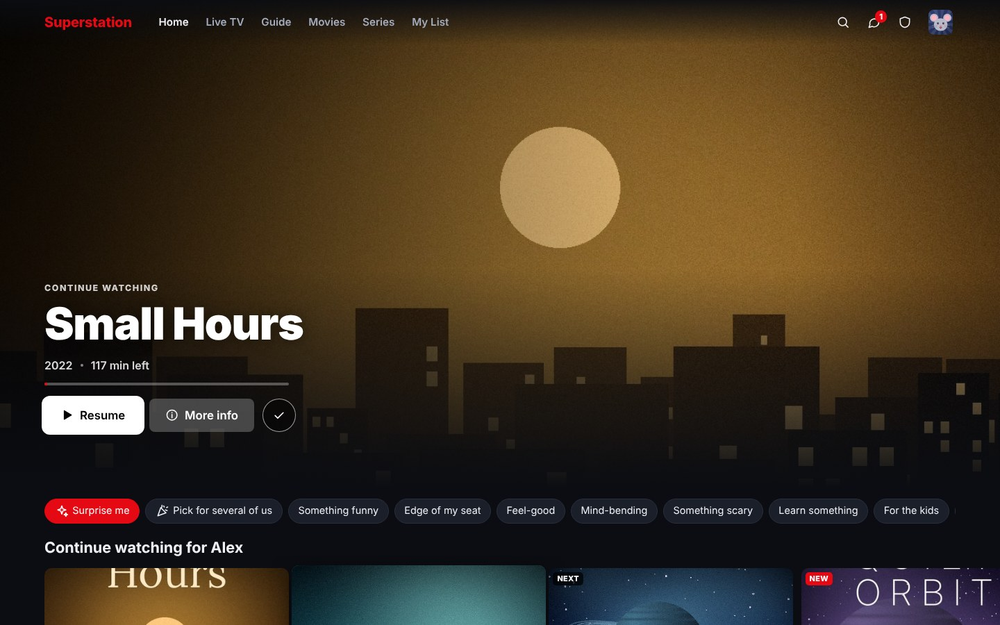
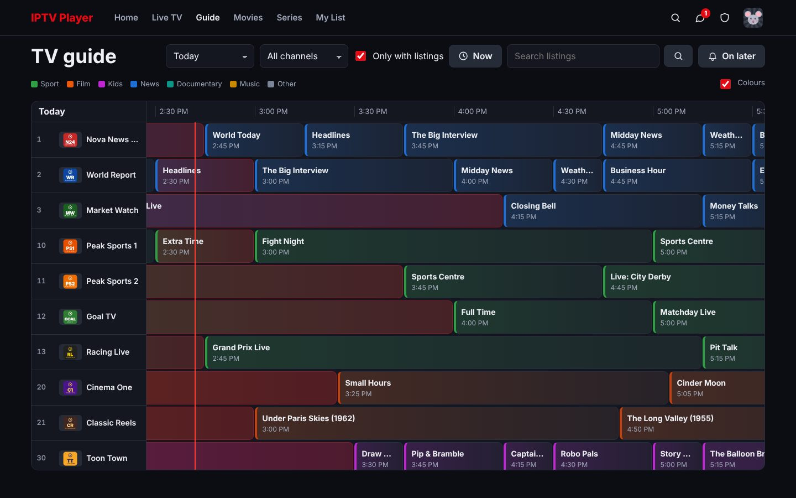
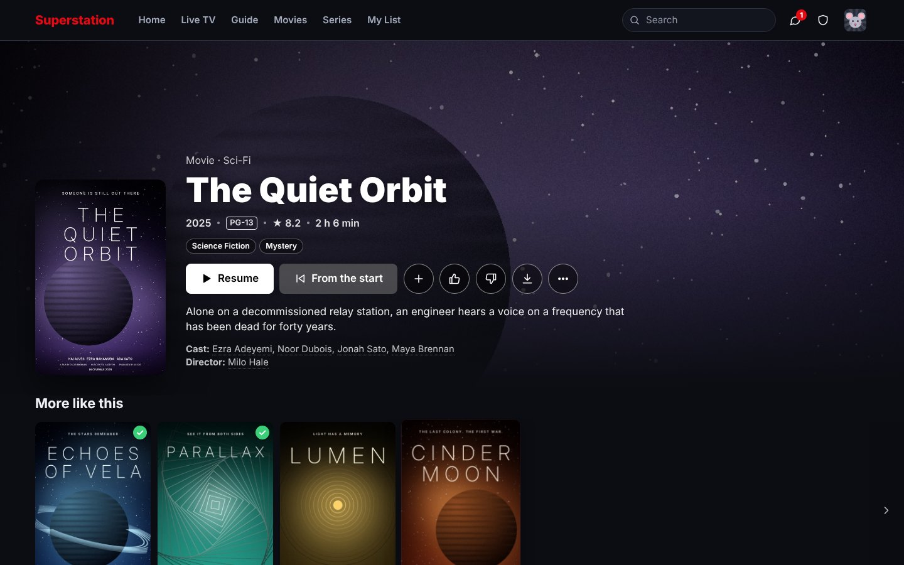
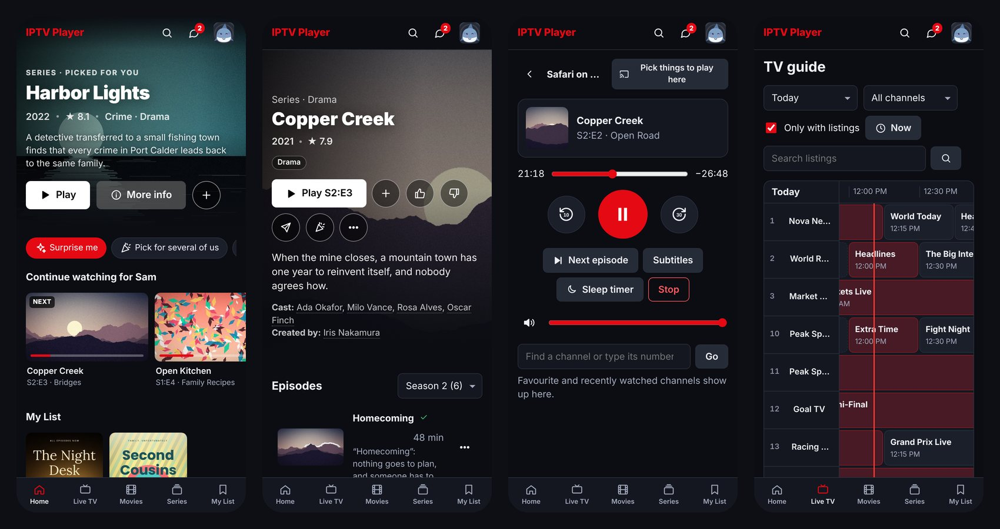
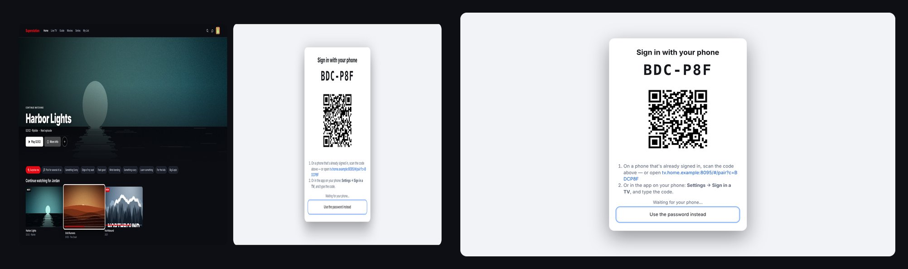

Your IPTV, as one app for the whole house
Superstation IPTV is a free, self-hosted IPTV player. Your M3U playlists and Xtream Codes accounts become a Netflix-style app with a TV guide, a DVR and a profile for everyone, in any web browser. Nothing to install on any device.

Bring your own content. This is a player. It comes with no channels, films or accounts: you add the playlists or provider logins you are entitled to use. Everything in these pictures is made up.
One small server at home, every screen in the house
Add your lists once. Everyone opens the site, picks their profile and watches.
Works on any device with a browser
Computers, phones, tablets, smart TVs and games consoles, with a layout and remote-control navigation for each. Installable as an app, with thin TV wrappers if you want an icon on the TV.
Live TV with a real guide
Channel numbers, a full TV guide from XMLTV or Schedules Direct, catch-up, rewind and pause, multiview, and reminders for what's on later.
Films and series that look the part
Posters, plots, cast and trailers. Several providers are merged into one tidy catalogue with the duplicates folded together, sorted the way a streaming service would.
DVR
Record a programme, or every episode of a series, straight from the guide. Keep rules stop it filling the disk.
Made for households
Profiles with PINs, kids profiles, age limits, screen time and bedtime, parental locks, and a manager role for a second grown-up.
Video goes direct when it can
Streams play straight from the provider to the viewer wherever possible. The server only steps in to convert what a device can't play, and it knows your provider's connection limit.
Plays almost anything
HLS, MPEG-TS, MP4, MKV and DASH; M3U, Xtream Codes, Stalker portals, and Jellyfin, Emby or Plex libraries. Subtitles from the file, found online, or picture subtitles.
Works with the apps you have
An Xtream Codes login per profile for TiviMate and friends, and an HDHomeRun tuner for Plex, Jellyfin and Emby.
Simple to run
One Docker container. No database, no npm packages: Node.js and ffmpeg are all it needs. Free and open source under the MIT licence.




Install
With Docker, on anything from a Raspberry Pi to a NAS (amd64 and arm64):
docker run -d --name iptv -p 8080:8080 \ -v "$PWD/data:/data" --restart unless-stopped \ ghcr.io/austin-72/superstation-iptv:latest
Then open http://<that computer's address>:8080, set a password and add a playlist. The quick start has Docker Compose, running it without Docker, and the first five minutes.
How it compares
Most IPTV players are an app you set up again on every device. Media servers are built around your own files, with IPTV on the side.
| Superstation IPTV | IPTV apps (TiviMate, IPTV Smarters) | Media servers (Jellyfin, Plex) | |
|---|---|---|---|
| Where it runs | Any browser, from one server at home | An app on each device | A server plus an app on each device |
| Setting up | Once, for everyone | On every device | Once, mostly for your own files |
| IPTV lists | What it is built for | What they are built for | An add-on |
| Household | Profiles, kids, screen time, shared history | Per device | Profiles |
| Cost | Free, open source | Often paid | Free or paid tiers |
Questions
Does it come with channels or films?
No. It is a player. You add M3U playlists, Xtream Codes accounts or your own media folders that you are entitled to use.
Do I need to install an app on my TV or phone?
No. Open the address in the device's browser. It can be added to the home screen as an app, and there are optional thin wrappers for Android TV, Fire TV, Samsung and LG.
Does all the video go through my server?
Only when it has to. Streams go straight from the provider to the viewer whenever the device can play them, and the server converts the rest with ffmpeg.
Can I keep using TiviMate, Plex or Jellyfin?
Yes. Each profile can have an Xtream Codes login for other apps, and the server can appear as an HDHomeRun tuner to Plex, Jellyfin and Emby.
Wasn't this called Browser IPTV Player?
Yes, until version 2.3. It is the same project; old links, backups and installs keep working.